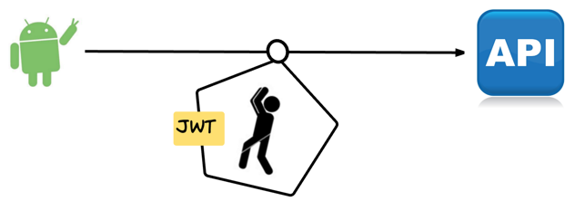
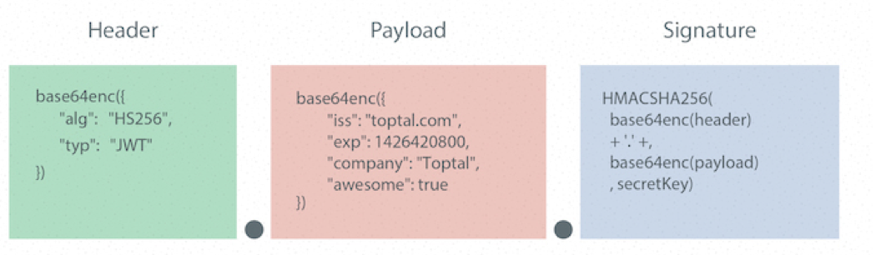
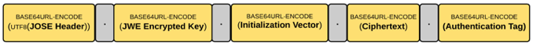

JWT & JWS & JWE
Json Web Token(JWT)
JSON Web Token（JWT）是一个非常轻巧的规范。这个规范允许我们使用JWT在两个组织之间传递安全可靠的信息。
官方定义:JSON Web Token (JWT) is a compact URL-safe means of representing claims to be transferred between two parties

现在网上大多数介绍JWT的文章实际介绍的都是JWS(JSON Web Signature),也往往导致了人们对于JWT的误解，但是JWT并不等于JWS，JWS只是JWT的一种实现，除了JWS外，JWE(JSON Web Encryption)也是JWT的一种实现。
下面就来详细介绍一下JWT与JWE的两种实现方式：

JSON Web Signature(JWS)
JSON Web Signature是一个有着简单的统一表达形式的字符串：

头部（Header）
头部用于描述关于该JWT的最基本的信息，例如其类型以及签名所用的算法等。 JSON内容要经Base64 编码生成字符串成为Header。
载荷（PayLoad）
payload的五个字段都是由JWT的标准所定义的。
- iss: 该JWT的签发者
- sub: 该JWT所面向的用户
- aud: 接收该JWT的一方
- exp(expires): 什么时候过期，这里是一个Unix时间戳
- iat(issued at): 在什么时候签发的
后面的信息可以按需补充。 JSON内容要经Base64 编码生成字符串成为PayLoad。
签名（signature）
这个部分header与payload通过header中声明的加密方式，使用密钥secret进行加密，生成签名。 JWS的主要目的是保证了数据在传输过程中不被修改，验证数据的完整性。但由于仅采用Base64对消息内容编码，因此不保证数据的不可泄露性。所以不适合用于传输敏感数据。
JSON Web Encryption(JWE)
相对于JWS，JWE则同时保证了安全性与数据完整性。 JWE由五部分组成：

JWE组成
具体生成步骤为：
- JOSE含义与JWS头部相同。
- 生成一个随机的Content Encryption Key （CEK）。
- 使用RSAES-OAEP 加密算法，用公钥加密CEK，生成JWE Encrypted Key。
- 生成JWE初始化向量。
- 使用AES GCM加密算法对明文部分进行加密生成密文Ciphertext,算法会随之生成一个128位的认证标记Authentication Tag。 6.对五个部分分别进行base64编码。
可见，JWE的计算过程相对繁琐，不够轻量级，因此适合与数据传输而非token认证，但该协议也足够安全可靠，用简短字符串描述了传输内容，兼顾数据的安全性与完整性。